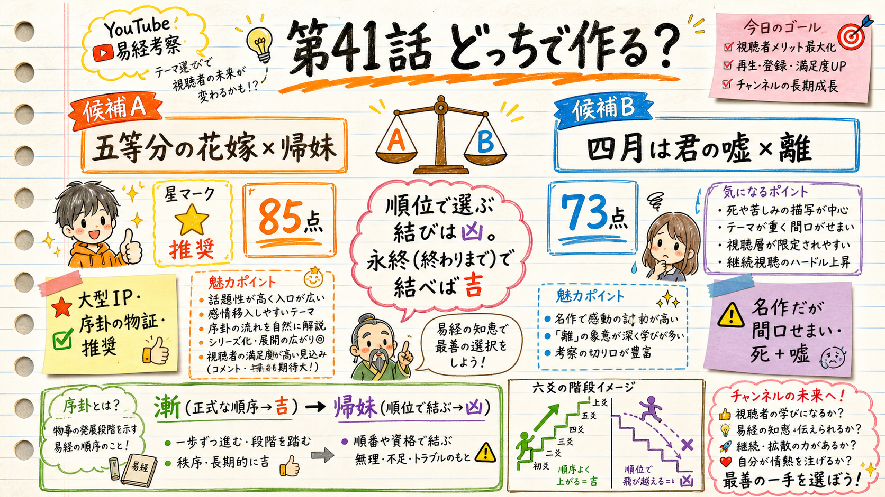

第41話 企画ゲート ・ content/061 ・ 公開 2026-07-20 04:00 JST
第41話、どっちで作る？
A：五等分の花嫁×帰妹 ／ B：四月は君の嘘×離
essay-episode Step1 の企画承認ゲート。concept例外プロトコルに従い候補2案を用意しました。A/B のどちらで作るかを選び、承認してください。タイトルはこの段階では決めません（台本確定後 Step8.5）。
TL;DR
- 推奨＝A（五等分の花嫁×帰妹）。topic-radar 突合で「新作品×未使用卦」の唯一の生き残り＝大型IP。独立採点 85／両ゲートpass。
- 芯＝序卦の隣接反転：漸（正式な順序でだんだん進む＝吉／ep19ハイキュー既出）→ 帰妹（順位・衝動で結ぶ＝征凶）。同じ「娘が嫁ぐ」でも作法で吉凶が逆。
- B（四月は君の嘘×離）は卦適合は素直だが、独立採点73・死＋嘘主題で間口が狭い。

第41話 企画A/B ぜんたい俯瞰（手描きグラレコ）
独立採点（自己採点禁止・まっさらな別の頭で絶対評価・内側ループ3周）
スコア推移 A：85→81→85（90未達で収束・max3到達）。前回指摘の主要論理欠陥（順番の二義混同・命題内部矛盾・帰妹卦辞と結末の逆行）は解消確認。事実捏造ゼロ。残る減点は帰妹の爻辞解釈の細かな価値付け＝Step2台本で db 逐語照合して確定し、そこで独立採点≧90をかける工程です。
| 軸（各25点） | A 五等分×帰妹 | B 四月×離 |
|---|
| 卦適合（gua_fit） | 22 | 22 |
| フックと刃（hook & blade） | 21 | 18 |
| 処方箋の深さ | 19 | 15 |
| IP規模と戦略 | 23 | 18 |
| 合計 | 85 | 73 |
| ゲート（事実検証／フック） | pass / pass | pass / pass |
候補A（推奨）：五等分の花嫁 × 帰妹（きまい・歸妹 54）
順位で選ぶ結びは、凶に転ぶ（帰妹の征凶）。順位を捨て「終わりまで添えるか」で結んだとき、同じ縁が吉に変わる。
＝惹かれた順位は、添う相手を決める資格を持たない。決めるのは「永終（終わりまでの覚悟）」だけ。
芯：序卦の隣接反転（これが反論不能の物証）
漸(53)
正式な段取り＝女歸吉
→
帰妹(54)
順位・衝動で結ぶ＝征凶
同じ「娘が嫁ぐ」でも 作法 が違えば吉凶が真逆。漸はep19（ハイキュー）で既出＝シリーズ回遊の橋にもなる。
6幕アウトライン（v2.3・観察1.5-2.5分／種明かし2-3分／処方箋1.5-3分）
- 違和感の提示（30秒）：スマホの連絡先を心の中で並べ替える。本命／とりあえずキープ。返信の速さも順位で決めている——なのに"1位"に選んだ相手と、なぜか続かなかった後ろめたさ（一人称・日常語・作品名まだ出さない）。
- 観察（1.5-2.5分・固有名＋名場面）：五等分の花嫁。同じ顔の五つ子。読者もファンも「推し順」を競う。だが結ばれた四葉は最も"主役らしくない"側で、原点（京都の思い出の子）でありながら正体は最後まで伏せられ、「嫌いです」と嘘で自分を最下位に置いた。学園祭最終夜、5人が別々に待つ中、彼が入ったのは保健室。結婚式では全員同じ花嫁衣装で四葉を当て、さらに5人全員を見分けた。／比較＝とらドラ！（順位1位の実乃梨でなく大河と）。
- 種明かし（2-3分）：帰妹＝卦辞「征凶、无攸利」。二層に分ける——「推し順（衝動・位取り＝征凶）」と「作法・永終（漸＝吉）」は別層。序卦 漸→帰妹は後者（作法）の物証。主語の橋渡し：位を越えて嫁ぐ娘と、人に1位2位をつける私たちは、同じ"位で縁を測る過ち"の裏表。
- 風刺の刃（30秒-1分）：幕1の"本命／キープ"に戻る。私たちは人を順位で値踏みする。その順位付けで突き進むこと自体が「征凶」——保険にした人にも、自分を下に置いた自分にも刃になる。
- 処方箋（1.5-3分・帰妹の六爻＋象辞「永終知敝」を階段に・db準拠）：終わりまで添えるか／どこが破れるかで結べ。初＝分をわきまえれば低位でも吉／二＝失望しても内なる芯(貞)を保つ／三＝順位を貪ると身を落とす（征凶の縮図・戒め）／四＝遅い結婚も時が来る／五＝装いより実／上＝実の無い籠＝順位・体裁だけの結びは空になる。
- 余韻（30秒）：惹かれた順位は、添う相手を決める資格を持たない。順位を手放した人にだけ、"終わりまで"の縁が残る。
作品事実（WebSearch一次確認済み・Step2でfact_check.md化）
結ばれる相手：四女・四葉。中学の京都で出会った「思い出の少女（原点）」が四葉と最終盤で判明。
四葉の葛藤：「嫌いです」と嘘。姉妹全員が風太郎を好きと知り、自分だけ幸せになる罪悪感で自分を最下位に。
告白：学園祭最終日の夜、5人が別々に待つ中、彼が入ったのは四葉のいた保健室。
結婚式：5人が同じ花嫁衣装。四葉を当て、さらに5人全員を見分けた（順位で切り捨てない証）。
候補B（対抗）：四月は君の嘘 × 離（り・離為火 30）
73 対抗
命題：光は、何かに依って初めて燃える。依った相手が去るとき、その光は依られた側へ移る。
卦適合：離＝clinging（依る）＋光。卦辞「畜牝牛吉」・象辞「継明照于四方」がそのまま主題を支える（Aのような卦辞と結末の反発が無い＝実は素直）。
⚠️ 弱点
- 処方箋が骨子止まり（離の六爻は焚如死如棄如と暗く、建設的な階段化が難しい）。
- 結末が重い（かをり死）＋「嘘」主題で間口が狭い。
- 五等分より IP規模・検索需要が小さく、序卦の橋（回遊）・ショート適性が弱い。
🚦 あなたの判断
A
五等分の花嫁 × 帰妹（推奨・独立採点85）。承認後、registryを planning登録し、Step2台本→fork採点≧90→本人台本ゲートへ自走します。
B
四月は君の嘘 × 離（独立採点73）。選ぶ場合、処方箋（離の六爻の建設的階段化）と冒頭場面を作り込んでから台本へ。
他
別の作品・別の卦にしたい／命題の方向を変えたい 等があれば指示してください（未使用卦は残り24：屯 小畜 豫 隨 臨 觀 噬嗑 剝 無妄 大畜 離 晉 解 姤 萃 鼎 艮 歸妹 豐 巽 渙 節 中孚 未濟）。
メタ情報（確定済み）
公開枠：2026-07-20 04:00 JST（coord claim-slot 取得済 / long / 061）。
title arm（機械割付・人は選べない）：H50=hole（穴あき対戦型）／ H49=kw（末尾【アニメ考察・易経】）。block2。
検証仮説：H54採番済。順位・勝ち負けで人を並べる痛点を帰妹（順位＝征凶／永終＝吉）の常識反転で救うフックが自己投影コメント率/保存率を上げるか（公開後72h-7d・ep29-40中央値比較）。
話数/卦の整合：ep41＝40卦使用済みの次。帰妹は未使用。dir番号≠話数（registry準拠）。